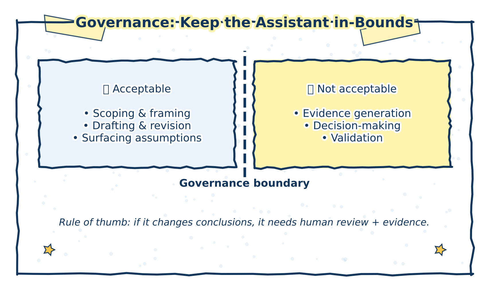

6 Organizational Governance for AI‑Assisted Analysis
This chapter outlines governance principles for the responsible use of generative AI assistants in policy and health analytics. Governance here is not understood as technical control or prohibition, but as a set of norms, expectations, and review practices that preserve analytical integrity, accountability, and trust.
Because AI‑assisted analysis can influence decisions, resource allocation, and public communication, the question is not whether AI is used, but under what conditions its use remains responsible.
The figure below summarizes the governance boundary that underpins the rest of this chapter.

Figure 6.1: Governance boundary for AI‑assisted analysis. Generative AI may support framing, drafting, and review, but must not cross into evidence generation, validation, or decision‑making.
6.1 Purpose of governance in AI‑assisted analysis
In policy and health contexts, analytical work is accountable not only to standards of evidence, but also to institutions, stakeholders, and affected populations. Generative AI systems introduce specific risks—fabrication, over‑confidence, framing effects, and obscured assumptions—that governance mechanisms are meant to surface and manage.
Practice note
Governance does not replace judgment; it makes judgment visible, reviewable, and defensible.
6.2 Acceptable uses
Generative AI assistance is appropriate when it is used to support analytical thinking and communication, while leaving evaluative judgment with human analysts.
Acceptable uses include:
Scoping and question formulation
Using AI to help decompose broad or ill‑defined problems into candidate analytical questions, dimensions, or lenses—without treating these outputs as definitive or exhaustive.Drafting and revising analytical text
Improving clarity, organization, tone, or accessibility of drafts, while retaining human control over claims, interpretations, and conclusions.Surfacing assumptions and gaps
Prompting AI to identify implicit assumptions, missing information, or areas of uncertainty in drafts or early analyses, as an aid to reflexive review.
Illustrative example
An analyst uses AI to reorganize a briefing note for a senior audience and to flag where causal language appears stronger than the evidence supports. The analyst revises the text accordingly and verifies all claims against source material.
6.3 Non‑acceptable uses
Generative AI assistance is not appropriate where it would substitute for evidence, expertise, or accountability.
Non‑acceptable uses include:
Generating or validating evidence
AI outputs should never be treated as empirical findings, data sources, or confirmation of factual claims.Making or justifying policy decisions
AI systems should not be used to recommend options, rank alternatives, or justify decisions, particularly where trade‑offs, values, or distributional impacts are involved.Replacing expert or peer review
AI assistance does not substitute for subject‑matter expertise, methodological review, or institutional oversight.
Common failure mode
Using AI‑generated summaries or comparisons as if they represented evidentiary consensus, without engaging with the underlying sources.
6.5 Transparency and disclosure
Transparency about AI use supports trust, interpretability, and appropriate review. Disclosure should be proportionate to the role AI played in the work and focused on helping readers understand how conclusions were reached.
In many contexts, this does not require detailed prompt logs, but it does require clarity about:
- Which stages of work involved AI assistance (e.g., scoping, drafting, revision)
- What the system did and did not do
- How outputs were reviewed and validated
Example disclosure (internal)
“Generative AI was used to assist with early drafting and structural revisions. All factual content, analysis, and conclusions were reviewed and validated by the author.”
Example disclosure (external, where appropriate)
“AI‑assisted tools were used for drafting support; responsibility for analysis and conclusions rests with the authors.”
6.6 Governance as a supporting structure
Effective governance does not seek to eliminate AI use, but to embed it within existing analytical standards: evidence review, peer scrutiny, documentation, and accountability.
Used in this way, governance functions as an enabling structure—one that allows generative AI to support analytical work without undermining trust, rigor, or responsibility.
These review practices are operationalized in Appendix A; see Figure.
These governance expectations are reflected in the alignment between review workflow and checklist practices shown in Appendix A Figure
6.6.1 Cross-walk: review dimensions mapped to workflow stages
| Review dimension | Stage 1: Draft & framing | Stage 2: Verification | Stage 3: Reasoning & uncertainty | Stage 4: Sign-off & disclosure |
|---|---|---|---|---|
| Scope & use of AI assistance | ✓ | ✓ | ||
| Framing and problem definition | ✓ | ✓ (re-check) | ||
| Factual accuracy & evidence discipline | ✓ | ✓ (claims match strength) | ||
| Reasoning, uncertainty, analytical integrity | ✓ | ✓ (final check) | ||
| Balance, alternatives, contested issues | ✓ | |||
| Authorship, voice, accountability | ✓ | |||
| Transparency & disclosure | ✓ |
6.6.2 Governance lens: what reviewers should look for
Governance is strengthened when review makes AI influence visible. The following dimensions help reviewers and managers identify where AI assistance may have crossed boundaries or introduced subtle analytical risks:
- Use and scope: Was AI used to support drafting and reflection rather than validation or decision-making?
- Framing: Did AI outputs lock in problem framing or obscure alternatives?
- Evidence discipline: Are factual claims anchored to sources, with no fabricated details or pseudo-citations?
- Reasoning and uncertainty: Are assumptions explicit and confidence proportional to evidence?
- Balance: Are contested issues presented with attention to evidence asymmetry?
- Authorship: Is accountability clear and attributable?
- Transparency: Is AI use explainable and disclosed where appropriate?
Appendix A operationalizes these checks as a stage-based pre-submission checklist.